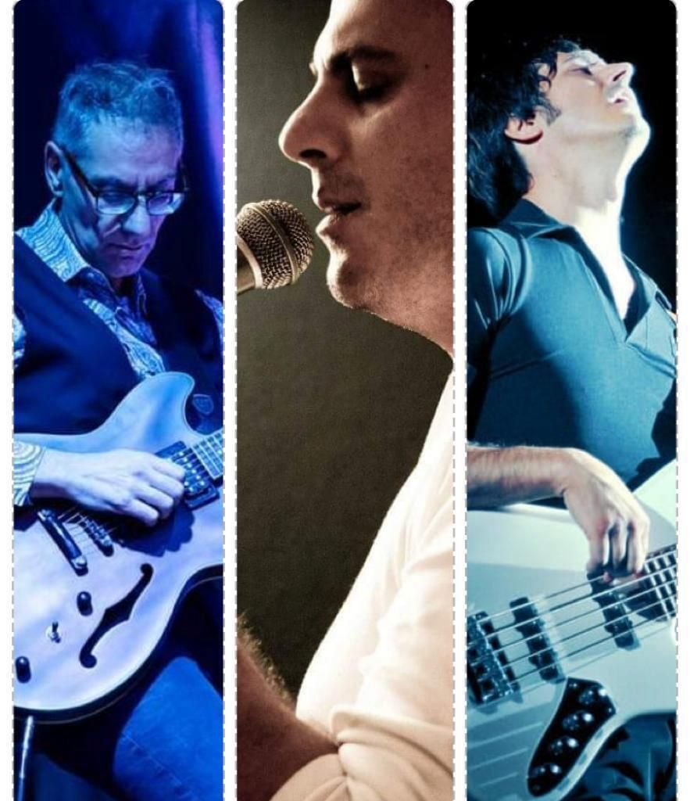
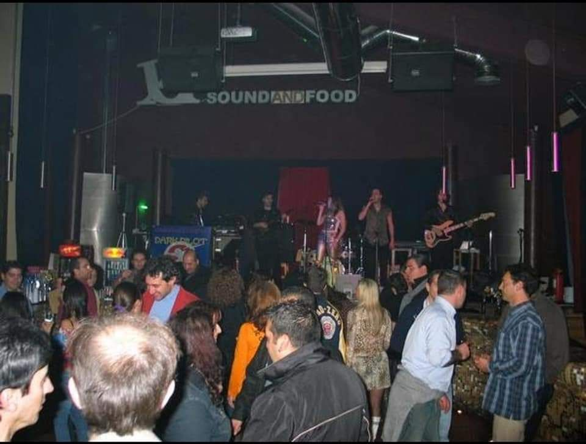
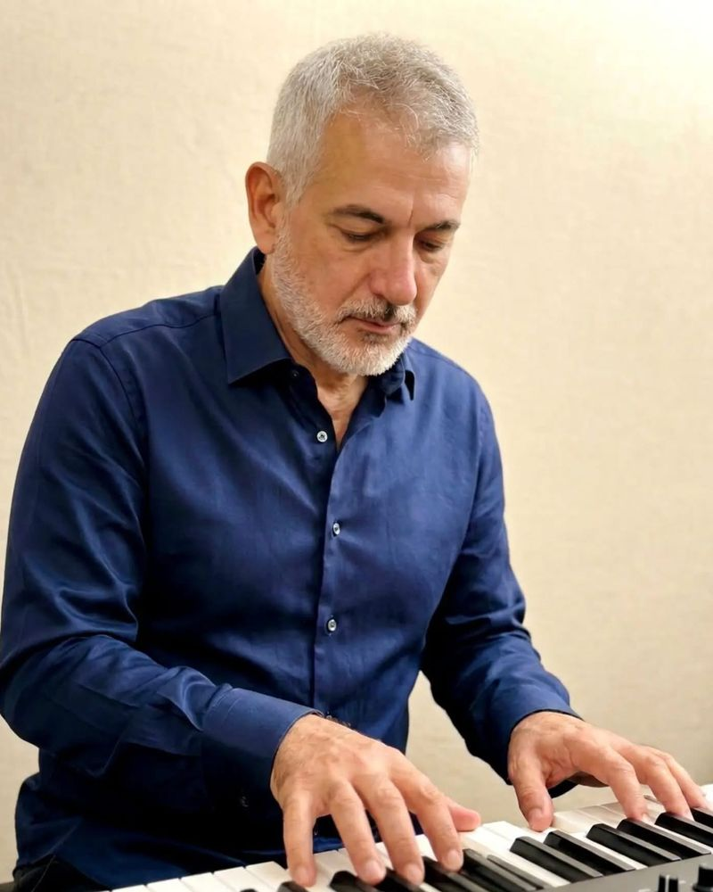
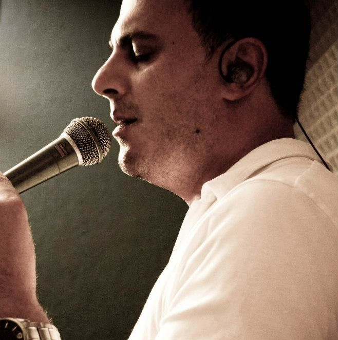

Cover band di Baglioni a Catania
Suoniamo dal vivo le canzoni di Claudio Baglioni nelle piazze e sui palchi della Sicilia, con gli arrangiamenti dei suoi concerti. Sul palco dal 2007.

audioClaB su TikTok
I video più visti del profilo @audioclab, da Io dal mare in giù.
La band, dal 2007
Siamo nati a Catania all'inizio del 2007. Il repertorio viene dai grandi concerti di Claudio Baglioni e lo suoniamo con gli arrangiamenti originali, senza riletture personali.


La formazione
- Gianfranco Albertivoce
- Giuseppe Farotastiere
- Debora Lombardopianoforte e tastiere
- Giuseppe Bertolochitarre
- Franco Prestichitarre
- Luigi Scuderibasso elettrico
- Andrea Brunobatteria

Ne hanno parlato
- MAD Concerti 2025: la Sicilia torna a vibrare con la grande musica dal vivoSikelian, 22 luglio 2025
- L'estate siciliana di MAD Concerti si accende con audioClaBSikelian, 30 giugno 2025
- Ospiti del programma Stelle di giornoRadio Studio 90 Italia
Prossimi concerti degli audioClaB
Le date arrivano da sole dagli eventi della pagina Facebook.
Se qui non compare nessuna data, al momento non ci sono concerti in programma: le nuove date escono sulla pagina Facebook.
Vedi tutte le date su Facebook